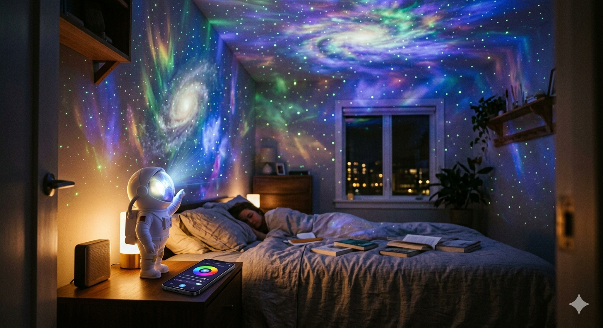

Інструкція користувача (QR-код на завантаження додатку)
Фірмове подарункове упакування
Bluetooth / Wi-Fi керування: зручний додаток для iOS та Android
16 мільйонів кольорів, кілька режимів світлових ефектів
Синхронізація з музикою та плавні переходи
Таймер автоматичного виключення: 1, 2 або 4 години
Ваша Власна Галактика в Кімнаті. Підкоріть зірки, не встаючи з ліжка.
Зустрічайте StarryNaut — найрозумніший нічник у формі астронавта, який перетворить вашу стелю на космічне шоу. Керування через додаток, 16 млн кольорів та синхронізація з музикою

Повне керування через телефон: Змінюйте кольори, швидкість обертання, яскравість та режим роботи (туманність, зірки, комбінація) одним дотиком в додатку (iOS / Android).
16 Мільйонів Кольорів: Створіть ідеальну атмосферу — від затишного синього до енергійного фіолетового
Синхронізація з музикою: Відчуйте ритм — увімкніть режим вечірки, і StarryNaut буде пульсувати в такт вашим улюбленим трекам
Автоматичний Таймер Сну: Налаштуйте вимкнення через 1, 2 або 4 години, щоб спокійно заснути під зорями, не турбуючись про економію енергіїx
Ідеальний для Сну та Медитації: М'яке, динамічне світло допомагає розслабитися та швидше заснути